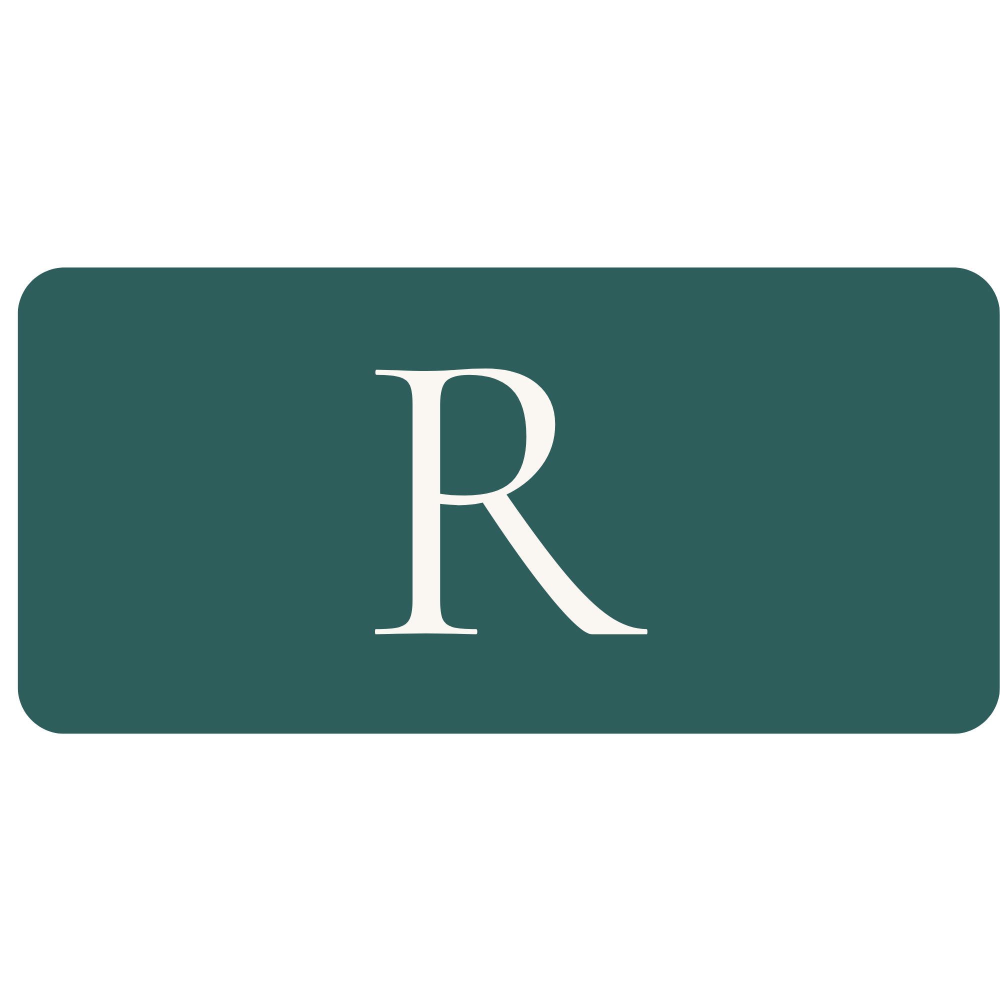
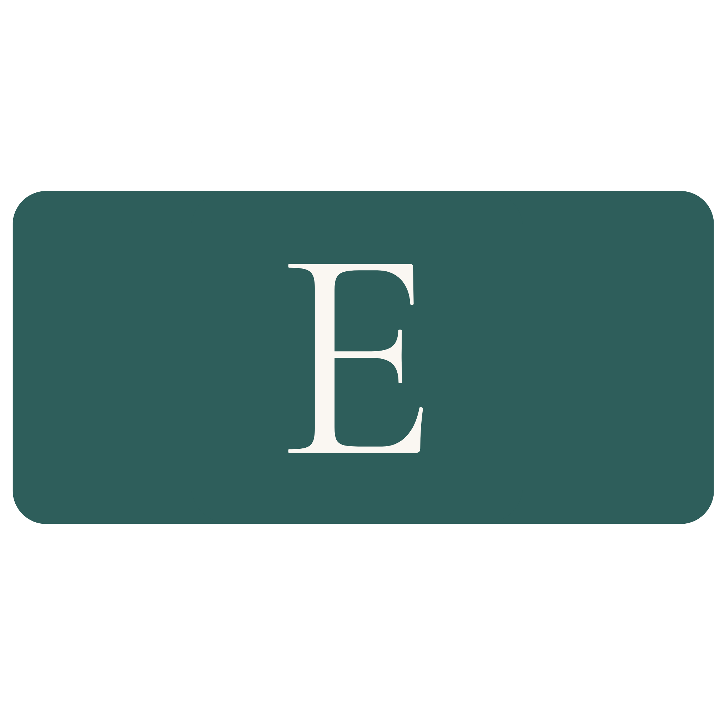

The DARE Program Philosophy
The DARE program is built upon four core principles, designed to guide you through a transformative journey in understanding and managing chronic pain. Each letter represents a vital step towards reclaiming your life.

Discover & Dialogue
Change begins by entering into dialogue with your body. Through curiosity and attention, you begin to notice patterns and connections that might otherwise go unseen.
As these discoveries take shape, they offer direction—helping you understand what your system needs and how to move forward with greater clarity and intention.

Accept & Allow
Change begins with awareness. Rather than getting pulled into fear, judgment, or future prediction, this step is about noticing what is present and allowing it to be there without resistance.
From this place, you begin to see more clearly—what you’re feeling, what’s driving it, and what your system may need. This creates the conditions for more specific, effective, and compassionate responses.

Respond & Regulate
With awareness comes the opportunity to respond differently.
Rather than waiting for the next flare or for your system to crash,
this step focuses on using practical tools
—such as breath, softening, and attention—
to support regulation in the moment, even when pain is present.
DARE uses a 5-point check in to decide whether
it's best to keep going, to modify or to rest:
breath, body tension, thoughts, emotions, overall energetic state
As you build this capacity, you create more options, more choice.
You become less driven by reactivity
and more able to make intentional choices
that consistently support change.

Explore & Expand
Where is all comes together: With greater awareness and the ability to respond with regulation, you can begin to explore what feels possible through small, supported changes. This step is about working with the 'edge' of your discomfort. It's about exploring & experimenting with interest & curiosity—adjusting breath, movement, attention, or pace—to see how your body responds.
Rather than pushing through or avoiding,
you work within the range that feels manageable and supported, identifying and exploring those 'edges'.
Over time, these small experiments help expand your capacity,
and decrease your body's protective responses.
Through the DARE approach you build
confidence, capacity, resilience, and a more intuitive, flexible, compassionate relationship with your body.